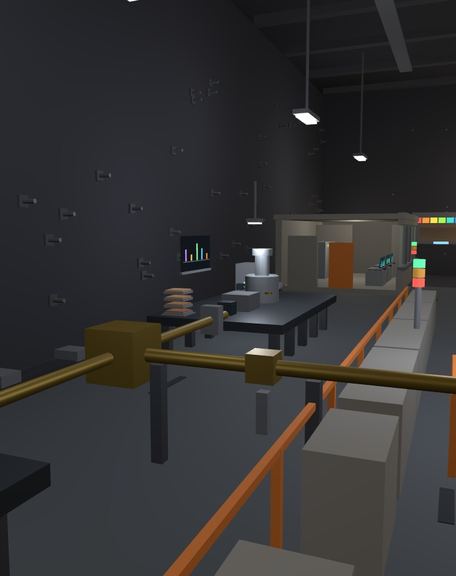
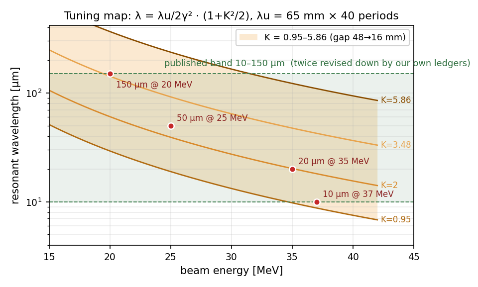
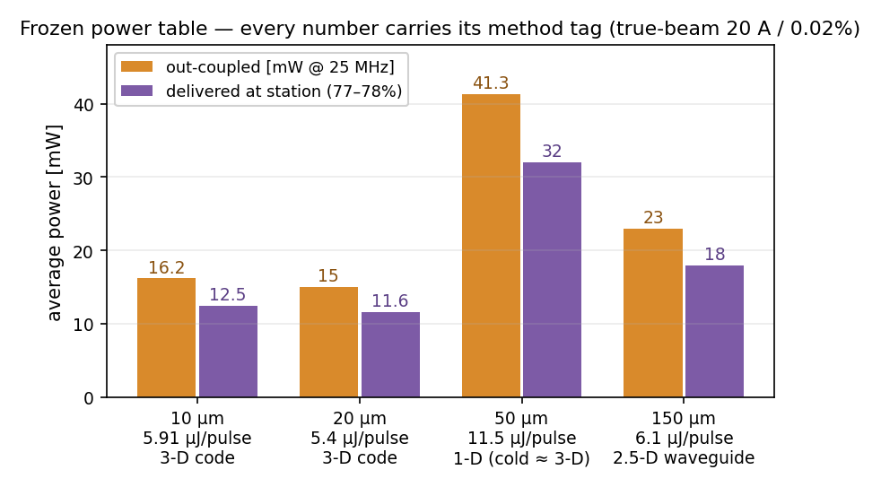

INFRARED FREE-ELECTRON LASER
sci-fel-01 · 10–150 µm tunable light, 30 m under Jezero · the city's first big-science user facility

The 29.5 m beamline hall: copper linac (left), interlock stack lights, shielded control room (right) — cutaway interior asset, 35.6k triangles

Undulator: λu = 65 mm × 40 periods, PPM NdFeB (N48), gap 16–48 mm — the red line is the electron beam, the rainbow bar is the tuning indicator

User end: gold-mirror transport line to two stations — THz spectroscopy (BL1) and pump-probe (BL2)

Tuning map with the four frozen working points — the K-band ribbon is what the gap actually buys

The frozen power table: out-coupled vs delivered-at-station, method tag on every column
Nameplate10–150 µm continuously tunable · 20–37.0 MeV · 1.0 GHz room-temp copper linac, r = 37.5 MΩ/m ±5% measured in HFSS · 6.00 m near-concentric cavity, hole out-coupling
📐 Verification35 ledgers · 7 home-built codes · 82 gates (76 green, 5 honest FAILs kept with attribution) · 58 pitfalls logged — the band shrank twice and the energy fell 50 → 37 MeV because our own ledgers said so
📐 Deep dives1-D/3-D/2.5-D oscillator codes · EGUN-style gun · slice PIC · Radia-lite undulator field · Geant4 dump sign-off (first L4 in the facility) · vacuum network · century rock-heat transient
🔥 Why no X-rayat 1.5 Å the mirrors die (R~1e-5) and SRF needs tons of helium — Mars air holds 4 ppm He, one strike and it's gone; infrared keeps the cavity, the 120-cycle machine, and a 74 kW bill = 0.042% of the city
UsersBL1: nine ISRU bands in-reach, perchlorate LOD 0.022 wt% (8× criterion margin, end-to-end audited) · BL2: pump-probe 0.9–1.8 ps at 10–20 µm, per-line attenuation table · CO₂-seeded mode ×1.46
In town56 × 20 × 12 m cavern, 30 m under rock at 210 K · windowless differential pumping · ⁴¹Ar held 12 h — a limit set by the dark-matter lab, not by dose · 9 knowledge cards · 82 bilingual sim entries